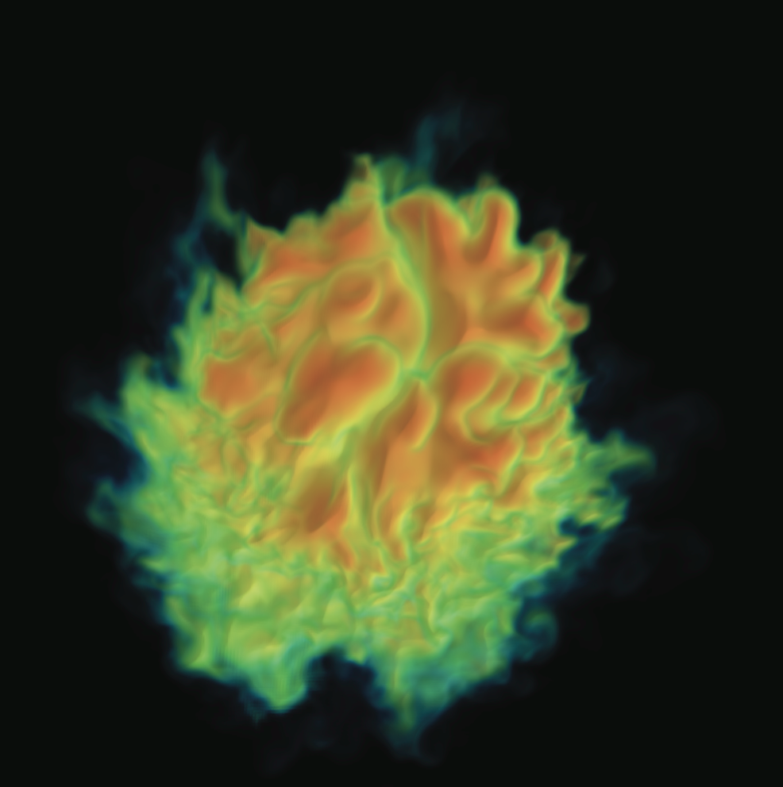

|
|
Hybrid Parallelism and Visualization

Until recently, production visualization software has achieved parallelism
by focusing on distributed-memory concepts.
When faced with multi-core nodes, visualization software has maintained
its distributed-memory approach,
treating each core on a node as its own process, and thereby losing
opportunities available from shared-memory parallelism.
With this work, we explore approaches for hybrid parallelism -- i.e.,
approaches that incorporate
both distributed-memory and shared-memory parallelism --
and its benefits, which include both improved performance and
reduced memory footprint.
In terms of findings, we learned that, for some
algorithms, multiple beneficial factors can combine leading to
dramatic improvements.
For example, for some streamline configurations, we found that
using shared-memory parallelism with nodes containing only four cores
can still reap speedups of over 10X (see Camp, TVCG, 2011).
Further, we used our lessons learned to extend VisIt to work in
a hybrid parallel mode, and observed good speedups (see Camp, DFM, 2013).
People
Publications
Particle Advection Performance Over Varied Architectures and Workloads
Hank Childs, Scott Biersdorff, David Poliakoff, David Camp, and Allen D. Malony
IEEE Conference on High Performance Computing, Goa, India, December 2014
[PDF] [BIB]
|
Transitioning Data Flow-Based Visualization Software to Multi-Core Hybrid Parallelism
David Camp,
Wes Bethel, and
Hank Childs
Workshop on Data-Flow Execution Models for Extreme Scale Computing (DFM 2013), Edinburgh, Scotland, September 2013
[PDF] [BIB]
|
GPU Acceleration of Particle Advection Workloads in a Parallel, Distributed Memory Setting
David Camp,
Hari Krishnan,
David Pugmire,
Christoph Garth,
Ian Johnson,
Wes Bethel,
Kenneth I. Joy, and
Hank Childs
EuroGraphics Symposium on Parallel Graphics and Visualization (EGPGV), Girona, Spain, May 2013
[PDF] [BIB]
|
Hybrid Parallelism for Volume Rendering on Large-, Multi-, and Many-Core Systems
Mark Howison,
Wes Bethel, and
Hank Childs
IEEE Transactions on Visualization and Computer Graphics (TVCG), January 2012
[PDF] [BIB]
|
Streamline Integration Using MPI-Hybrid Parallelism on a Large Multicore Architecture
David Camp,
Christoph Garth,
Hank Childs,
David Pugmire, and
Kenneth I. Joy
IEEE Transactions on Visualization and Computer Graphics (TVCG), November 2011
[PDF] [BIB]
|
MPI-hybrid Parallelism for Volume Rendering on Large, Multi-core Systems
Mark Howison,
Wes Bethel, and
Hank Childs
EGPGV, Norrkoping, Sweden, May 2010
Best Paper
[PDF] [BIB]
|
|